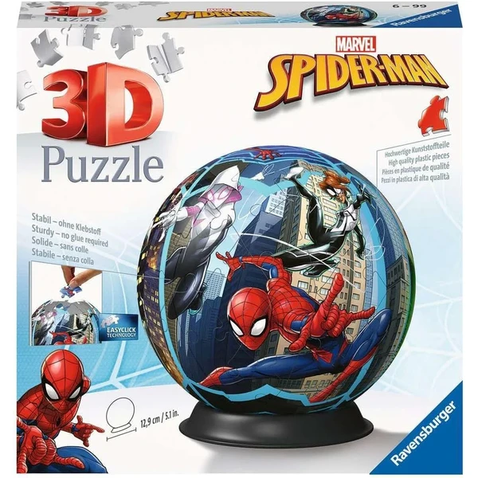
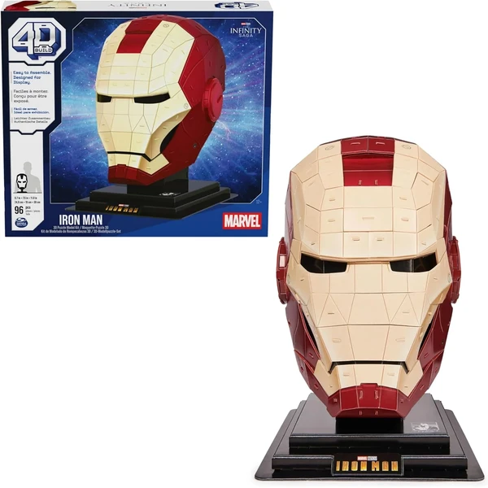
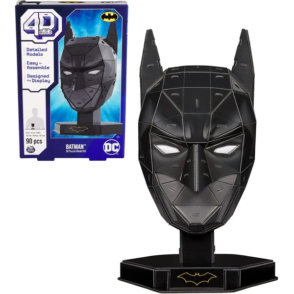

✨ Guía especial
Puzzles 3D de superhéroes: Spiderman, Iron Man, Batman y más
Los personajes más populares y qué marca elegir
Los personajes más populares y qué marca elegir
Los puzzles 3D de superhéroes son una de las categorías con más variedad de personajes dentro del catálogo, aunque menos habituales que otras licencias como Harry Potter. En esta guía repasamos los modelos de Spiderman, Avengers, Iron Man y Batman, y aclaramos algo importante antes de empezar: no todos pertenecen al mismo universo de cómic.
Spiderman es, con diferencia, el personaje más popular de toda esta categoría — su popularidad por sí sola supera a la del resto de superhéroes juntos. Los modelos suelen ser figuras individuales del propio personaje, de tamaño compacto y pocas piezas, pensadas para un público infantil que puede montarlas sin apenas dificultad.

Spiderman Ver en Amazon →Los Avengers como grupo e Iron Man como personaje individual son la segunda opción más popular dentro de la categoría, aunque bastante menos populares que Spiderman. Al igual que en el resto de la categoría, suelen ser figuras individuales de tamaño compacto — buena opción si el destinatario del regalo tiene preferencia por un personaje concreto del equipo en lugar del grupo completo.

Iron Man Ver en Amazon →Aunque suele aparecer mezclado en las mismas tiendas y catálogos que los personajes de Marvel, Batman pertenece al universo de DC Comics — un dato que conviene aclarar en el propio artículo para que no dé la sensación de error a quien conoce bien ambos universos de cómic. Aun así, tiene sentido incluirlo aquí en vez de crear un artículo aparte, ya que es poco habitual de forma individual y comparte el mismo tipo de comprador que el resto de la categoría.
La marca Prime 3D es una de las especializadas en este tipo de figura de Batman en concreto, con un formato de puzzle curvo (no plano) pensado para exponer en pie una vez montado.

Batman Ver en Amazon →Tanto los modelos de Spiderman y Avengers como el de Batman de Prime 3D se encuentran principalmente en Amazon, donde hay más variedad de personajes disponibles que en tienda física.
Spiderman, con diferencia — su popularidad supera a la del resto de personajes de esta categoría juntos.
De DC Comics. Aunque suele aparecer mezclado con figuras de Marvel en las mismas tiendas, pertenece a un universo de cómic distinto.
Prime 3D es una de las marcas especializadas en este tipo de figura, con un formato de puzzle curvo pensado para exponer en pie una vez montado.
Principalmente en Amazon, donde hay más variedad de personajes disponibles que en tienda física.
Todos los tipos, materiales, marcas y modelos según la edad.